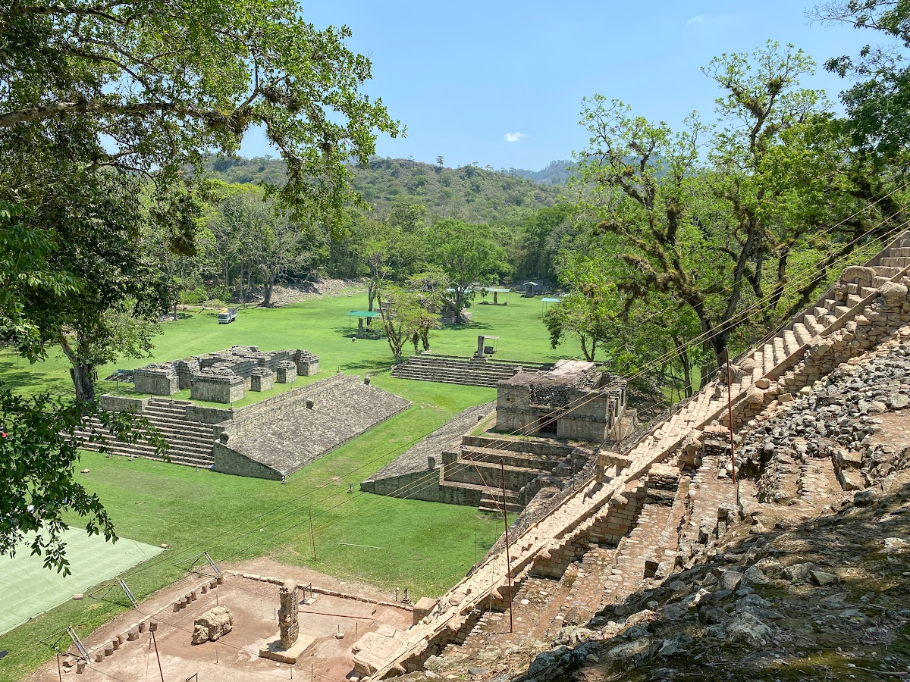
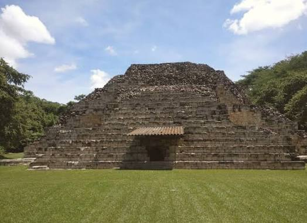
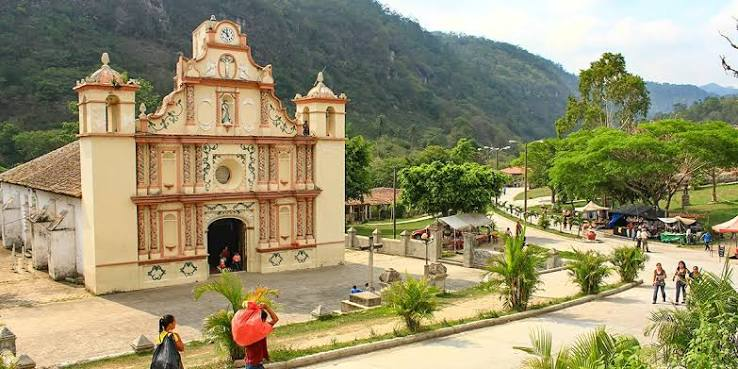
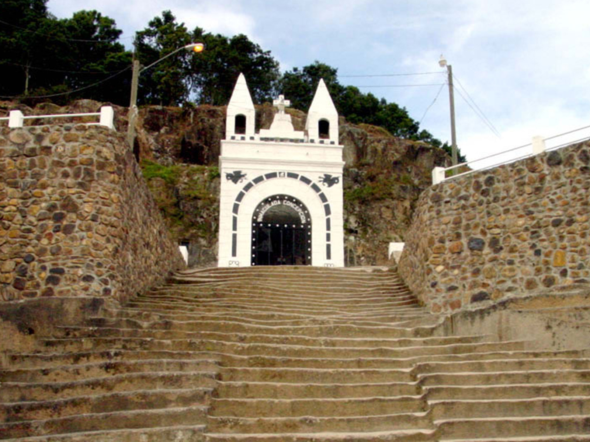
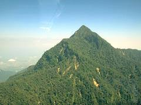
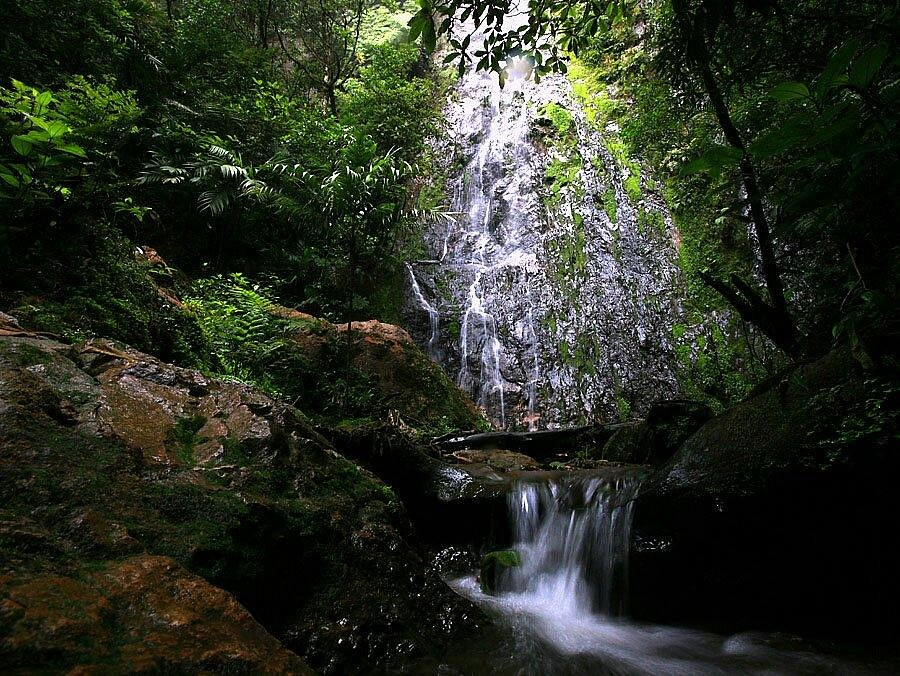
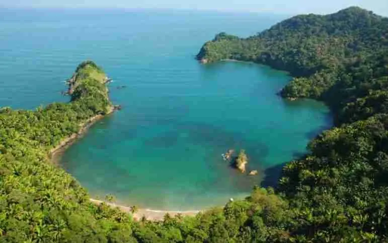

Ruta Maya y Arqueológica

1. Parque Arqueológico Copán Ruinas
Ubicado en un frondoso valle del departamento de Copán en el occidente del país, este sitio arqueológico abarca complejas plazas, la Acrópolis y templos ceremoniales rodeados de bosque tropical seco y secundario.
Principales Atractivos
Nivel de Dificultad de Acceso
Fácil / Moderado | Carretera pavimentada en su totalidad (CA-4 y ruta occidental)
| Ciudad de Origen | Ciudad de Destino | Altitud del Destino | Distancia Estimada (km) | Tiempo Estimado de Traslado |
|---|---|---|---|---|
| Tegucigalpa | Copán Ruinas | 600 msnm | ~363 km | 6 h 00 min |
| San Pedro Sula | Copán Ruinas | 600 msnm | ~175 km | 3 h 15 min |
| Comayagua | Copán Ruinas | 600 msnm | ~280 km | 4 h 45 min |
| La Ceiba | Copán Ruinas | 600 msnm | ~365 km | 6 h 00 min |

2. El Puente (Parque Arqueológico)
Situado en el municipio de La Jigua, Copán, es el segundo parque arqueológico más grande del occidente hondureño. Se compone de varias plazas, pirámides de menor altura y estructuras construidas sobre el valle del río Chamelecón.
Principales Atractivos
Nivel de Dificultad de Acceso
Fácil | Muy cercano a la carretera internacional CA-4, con un desvío corto y pavimentado.
| Ciudad de Origen | Ciudad de Destino | Altitud del Destino | Distancia Estimada (km) | Tiempo Estimado de Traslado |
|---|---|---|---|---|
| Tegucigalpa | El Puente (La Jigua) | 480 msnm | ~305 km | 5 h 00 min |
| San Pedro Sula | El Puente (La Jigua) | 480 msnm | ~118 km | 2 h 15 min |
| Comayagua | El Puente (La Jigua) | 480 msnm | ~222 km | 3 h 45 min |
| La Ceiba | El Puente (La Jigua) | 480 msnm | ~308 km | 5 h 00 min |
Ruta Lenca y Pueblos con Encanto

1. Gracias (Lempira)
Ciudad colonial asentada a las faldas del majestuoso Parque Nacional Montaña de Celaque. Presenta una arquitectura virreinal bien preservada con calles empedradas y un entorno de montañas pinas.
Principales Atractivos
Nivel de Dificultad de Acceso
Fácil | Acceso por carreteras completamente pavimentadas (vía Siguatepeque-La Esperanza o vía Santa Rosa de Copán).
| Ciudad de Origen | Ciudad de Destino | Altitud del Destino | Distancia Estimada (km) | Tiempo Estimado de Traslado |
|---|---|---|---|---|
| Tegucigalpa | Gracias, Lempira | 800 msnm | ~269 km | 4 h 30 min |
| San Pedro Sula | Gracias, Lempira | 800 msnm | ~199 km | 3 h 30 min |
| Comayagua | Gracias, Lempira | 800 msnm | ~186 km | 3 h 15 min |
| La Ceiba | Gracias, Lempira | 800 msnm | ~389 km | 6 h 15 min |

2. La Esperanza e Intibucá
Conocida como la "zona más fría de Honduras", estas dos ciudades gemelas se sitúan sobre la alta meseta de la sierra de Intibucá, rodeadas de bosques de pino y un clima fresco de alta montaña.
Principales Atractivos
Nivel de Dificultad de Acceso
Fácil | Carretera pavimentada (RN-22) en muy buenas condiciones de circulación.
| Ciudad de Origen | Ciudad de Destino | Altitud del Destino | Distancia Estimada (km) | Tiempo Estimado de Traslado |
|---|---|---|---|---|
| Tegucigalpa | La Esperanza | 1,700 msnm | ~185 km | 3 h 15 min |
| San Pedro Sula | La Esperanza | 1,700 msnm | ~225 km | 4 h 00 min |
| Comayagua | La Esperanza | 1,700 msnm | ~102 km | 2 h 00 min |
| La Ceiba | La Esperanza | 1,700 msnm | ~415 km | 6 h 45 min |
Ecoturismo y Bosques Nublados

1. Parque Nacional Pico Bonito (La Ceiba)
Una de las cordilleras costeras más escarpadas y biodiversas del Caribe centroamericano, con picos que alcanzan casi los 2,430 msnm cubiertos por exuberante selva tropical y bosque nublado.
Principales Atractivos
Nivel de Dificultad de Acceso
Moderado / Exigente | ara llegar a la cuenca del río Cangrejal se transita por camino de terracería accesible para la mayoría de vehículos; el ascenso a los picos requiere buena condición física y guías locales.
| Ciudad de Origen | Ciudad de Destino | Altitud del Destino | Distancia Estimada (km) | Tiempo Estimado de Traslado |
|---|---|---|---|---|
| Tegucigalpa | Pico Bonito | 150 msnm - 2,430 msnm | ~400 km | 6 h 30 min |
| San Pedro Sula | Pico Bonito | 150 msnm - 2,430 msnm | ~195 km | 3 h 30 min |
| Comayagua | Pico Bonito | 150 msnm - 2,430 msnm | ~317 km | 5 h 15 min |
| La Ceiba | Pico Bonito | 150 msnm - 2,430 msnm | ~15 km | 0 h 30 min |

2. Parque Nacional La Tigra
Área protegida compuesta por un denso bosque nublado de alta montaña que funge como la principal fuente de agua potable para la capital.
Principales Atractivos
Nivel de Dificultad de Acceso
Moderado | La carretera cuenta con sectores adoquines, asfalto y balastre sin pavimentar según el acceso escogido (Jutiapa o El Rosario). Se sugiere vehículo alto.
| Ciudad de Origen | Ciudad de Destino | Altitud del Destino | Distancia Estimada (km) | Tiempo Estimado de Traslado |
|---|---|---|---|---|
| Tegucigalpa | La Tigra | 2,270 msnm | ~22 km | 0 h 50 min |
| San Pedro Sula | La Tigra | 2,270 msnm | ~270 km | 4 h 30 min |
| Comayagua | La Tigra | 2,270 msnm | ~115 km | 2 h 15 min |
| La Ceiba | La Tigra | 2,270 msnm | ~420 km | 6 h 45 min |
Caribe y Arrecifes

1. Roatán (Islas de la Bahía)
Isla estrecha y montañosa en el mar Caribe, rodeada por manglares, arenas blancas de origen coralino y la barrera del Arrecife Mesoamericano.
Principales Atractivos
Nivel de Dificultad de Acceso
Fácil / Mixto | Vía aérea directa a su aeropuerto internacional (RTB) o vía marítima utilizando ferry comercial desde el puerto de La Ceiba.
| Ciudad de Origen | Ciudad de Destino | Altitud del Destino | Distancia Estimada (km) | Tiempo Estimado de Traslado |
|---|---|---|---|---|
| Tegucigalpa | Roatán | 0 msnm | ~274 km (Vuelo directo) | 0 h 45 min (Vuelo) / 8 h (Carretera + Ferry) |
| San Pedro Sula | Roatán | 0 msnm | ~180 km (Vuelo directo) | 0 h 35 min (Vuelo) / 5 h (Carretera + Ferry) |
| Comayagua | Roatán | 0 msnm | ~230 km (Vuelo XPL) | 0 h 40 min (Vuelo) / 6 h 30 min (Carretera + Ferry) |
| La Ceiba | Roatán | 0 msnm | ~75 km (Ferry) | 0 h 15 min (Vuelo) / 1 h 15 min (Ferry) |

2. Parque Nacional Jeanette Kawas (Punta Sal - Tela)
Complejo costero-marino en el departamento de Atlántida constituido por dos penínsulas, arrecifes, lagunas costeras, ecosistemas de manglar y playas vírgenes de arena blanca.
Principales Atractivos
Nivel de Dificultad de Acceso
Moderado | Acceso terrestre a la ciudad de Tela por carretera pavimentada (CA-13), seguido de un trayecto en lancha a motor por el mar hacia la península de Punta Sal.
| Ciudad de Origen | Ciudad de Destino | Altitud del Destino | Distancia Estimada (km) | Tiempo Estimado de Traslado |
|---|---|---|---|---|
| Tegucigalpa | Tela (Punta Sal) | 0 msnm | ~300 km | 4 h 45 min (+ 45 min en lancha) |
| San Pedro Sula | Tela (Punta Sal) | 0 msnm | ~98 km | 1 h 45 min (+ 45 min en lancha) |
| Comayagua | Tela (Punta Sal) | 0 msnm | ~217 km | 3 h 30 min (+ 45 min en lancha) |
| La Ceiba | Tela (Punta Sal) | 0 msnm | ~97 km | 1 h 30 min (+ 45 min en lancha) |